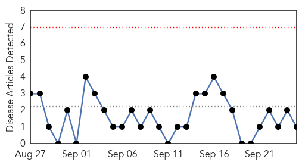
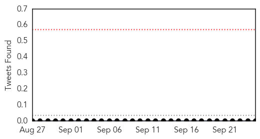
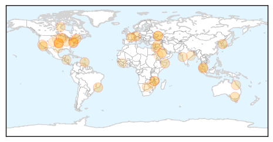

Pertussis
30-Day Web Trend
0 alerts, 0 warnings

30-Day Twitter Trend
0 alerts, 0 warnings

Article Locations
Article Confidences

Top Articles:
Top Tweets:
-
No tweets found for Sep 25, 2015
Unknown
30-Day Web Trend
0 alerts, 0 warnings

30-Day Twitter Trend
2 alerts, 0 warnings

Article Locations
Article Confidences

Top Articles:
- 0.994
- CDC Says Flu Vaccine Should Be More Effective This Season : Shots – Health News : NPR
- 0.991
- Saudi Arabia releases updated MERS statistics
- 0.962
- Health Officials Send E. Coli Warning
- 0.958
- South Korea calls for tighter monitoring against MERS
- 0.906
- Officials Concerned Over Increase Of HIV Cases In Kandahar
- 0.884
- Bali rabies outbreak different, says veterinary department
- 0.843
- New clues on the history of the smallpox vaccine virus
- 0.824
- Researchers are Working on Vaccine for Severe Viral Brain Infection
- 0.820
- MSF Refused Permission to Work in Lugansk
- 0.808
- Health officials urge precautions as Shigella cases on the rise in Kansas City, Missouri
- 0.807
- HEALTH WORKERS AVERTED MAJOR OUTBREAK OF CHICKEN POX AT MT. GAY HOSPITAL
- 0.797
- WA Government launches new campaign to tackle mosquito threat
- 0.795
- Bluetongue Virus Confirmed in White-Tailed Deer in Eastern Washington
- 0.773
- UN agency says aid organisations are reporting increase of people with Kala Azar in Somalia
- 0.764
- Shingles vaccine available for 70 and 78 year olds
- 0.760
- Fig & Olive DC Salmonella Outbreak Includes Cases From MD, PA, VA, IL & AL
- 0.749
- Syria UN health agency urges donors to assist countries doing the heavy lifting
- 0.742
- Rabies in Malawi: A mother’s first-hand account
- 0.740
- A dozen lawsuits pending in cucumber salmonella outbreak
- 0.725
- Fig & Olive's West Hollywood Location Linked to Salmonella (UPDATED)
- 0.722
- Idiopathic pulmonary fibrosis in BRIC countries: the cases of Brazil, Russia, India, and China
- 0.708
- WA Government launches new campaign to tackle mosquito threat
- 0.690
- Bed Sores Lead List of Complications in Indiana Hospitals
- 0.672
- Polio is Gone From Nigeria, WHO Says
- 0.662
- Malaria Under Control
- 0.636
- Do not panic, take precautions; indiscriminate culling not the answer — Christine Chin
- 0.633
- Pennsylvania hospitals have made measurable progress in fighting preventable infections
- 0.625
- Continuing Promise 2015 Partners with Cuban Medical Delegation in Haiti
- 0.617
- Ukraine: MSF refused permission to work in Lugansk, leaving vulnerable people deprived of essential healthcare and medicines
- 0.597
- WI woman urging people to get flu shot after near-death experience
- 0.592
- Cucumber Contaminated With Salmonella Poona Prompted the Food Poisoning Lawyers to Expand Efforts to Help Victims of Cucumber Food Poisoning
- 0.572
- Odisha breaking news, Latest Odisha news,Odisha Headlines, Odisha latest online news, Odia news paper, Odisha epaper
- 0.559
- Tipping Point: Will Latinos Follow Pope Francis’s Lead on the Environment?
- 0.556
- Ukraine: MSF refused permission to work in Lugansk
- 0.535
- Flu “Shoot-Out” planned for Washington County
- 0.535
- Ukraine: MSF is refused permission to work in Lugansk, depriving people of essential healthcare
- 0.523
- New CDC Zimbabwe Head Advocates For Increased Efforts Towards Elimination Of HIV
- 0.522
- Herpes vaccine shows promise with prophylactic and the therapeutic efficacy in study
- 0.517
- 14 Indians, one Odia injured in stampede during Hajj at Mina, Odisha Current News, Odisha Latest Headlines
- 0.515
- South Dakota livestock battling two blister diseases; but not FMD
- 0.511
- New CDC Zimbabwe head advocates for increased efforts towards elimination of HIV
Top Tweets:
- 0.544
- Flu season is just around the corner. RT if you have gotten or plan on getting your flu vaccine: http://t.co/RWZ9rz6dcw